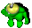
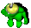

16 identifies this enemy Grunt as type "Scroll Grunt"
1 enemy team number.
2 enemy team number.
3 enemy team number.
Note: Gruntz will attack any other Grunt with a different team number!
| 1 |  Freeze Freeze |
all of the Gruntz near the reader are turned into Gruntziclez (even friendz). |
|---|---|---|
| 2 |  Health Health |
all of the Gruntz near the reader are restored to full Health (even enemies!). |
| 3 |  Resurrection Resurrection |
all of the Grunt Puddlez   near the reader are restored to life near the reader are restored to life   (thin red line, but alive).  (thin red line, but alive). |
| 4 |  Random Toyz Random Toyz |
all of the Gruntz near the reader receive Toyz to play with. |
| 5 |  Teleport Teleport |
all of the Gruntz near the reader are teleported  to random locationz. to random locationz. |
| 6 |  Rolling Ballz Rolling Ballz |
Giant Ballz  roll outward from the reader in the four cardinal directions. roll outward from the reader in the four cardinal directions. |
For any other enemy Grunt, this is the number of Tilez away he will sense any other team's Grunt.
Left
Top
Right
Bottom
(Definitely does apply to this enemy AI type.)
0 This field specifies the number of Tiles to the left of the original position that the Grunt will wander randomly.
0 This field specifies the number of Tiles above the original position that the Grunt will wander randomly.
0 This field specifies the number of Tiles to the right of the original position that the Grunt will wander randomly.
0 This field specifies the number of Tiles below the original position that the Grunt will wander randomly.
Scroll Gruntz are a newly discovered grunt type.These gruntz will stand at a location, and when they sense your grunt they will go up to him and give him a scroll to read.
However, they also attack immediately after giving the scroll.
Unlike most gruntz,
Scroll Gruntz will not chase your grunt until after they fully regain their stamina.Puzzle Use: Using Scroll Gruntz is a tricky business, the only way to get your grunt to finish reading the scroll he is given is to give the Scroll Grunt a toy simultaneously. So be sure to provide the player'z grunt a toy to give! Note: giving the grunt a toy simultaneously is not as easy as it lookz, you will have to practice a couple of timez before getting the hang of it.